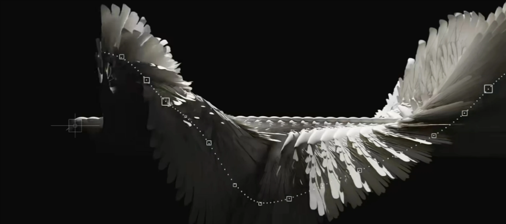

形影的束缚已然挣脱，此处空无一物
🔭热爱后端开发
📦正在进行的项目:C语言和C++基础语法学习，GitHub和Markdown相关知识积累
🌱立志深耕后端领域(but在做网页的这段时间对前端开始感兴趣)，持续学习分享。希望能顺利分流到软件工程专业，继续精进计算机基础知识、开拓视野
🛠️目前所持技能:Python、C++
接触了markdown,git,github,html,css,js(学的东西真多啊)